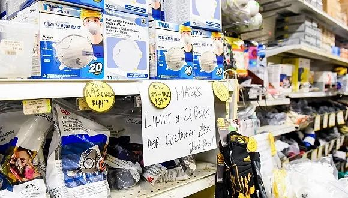
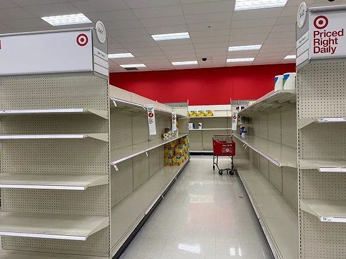
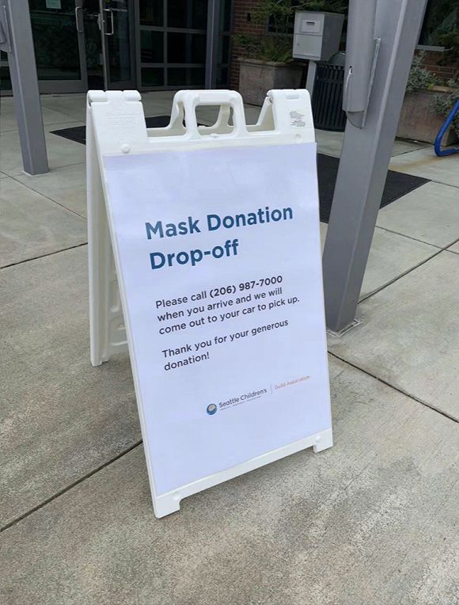

留在美国的哈佛博士生：我正在等新冠检测通知
原文链接 备份链接 图片来源：Twitter 记者：安晶 “ “外面的天气好得要命，感觉这个疫情像是假的。” ” “我的学生私下告诉我，他做了病毒检测，正在等结果。我现在还没有症状，正在家隔离，看会不会收到去检测的通知。” 哈佛大学的博士 …

记者 | 刘雨静
编辑 | 牙韩翔
“
由于口罩紧缺，微商和微信群卖口罩开始在美国华人中流行起来，各色微信群成了人们互通有无的渠道。
”
美国新冠肺炎疫情正开始全面扩散，卫生用品在美国也出现有价无市的情况。早前有人在社交媒体发文称，美国口罩充足，沃尔玛售卖2.97美元20片的口罩。但现实或许并非如此。

网络上流传的图片显示美国沃尔玛超市的口罩充足。
美国亚特兰大博士在读的张亮对界面新闻说，沃尔玛的这款低价口罩，2个月前他已经在官网看到过开始售卖的消息，但他每次查询该口罩，线上一直显示缺货（out of stock），线下也无货。
“看到这个口罩价格图好几次了，但我也不敢去Walmart看有没有货，”洛杉矶居民林肖丹对界面新闻说，“我所知道的口罩价格比这高很多，亚马逊上也都是第三方卖家在售卖，3M的8511口罩有时要卖到24.95美金一个。”
多个在美国加州、纽约等地居住的华人对界面新闻表示，附近的沃尔玛、Target、Home Depo和CVS等连锁零售商中，口罩早已断货，上一次买到口罩在是1月份。而卫生纸、卫生巾和消毒洗手液等产品货架也常被抢购一空。

美国洛杉矶橙县一家Target超市近期的卫生用品货架。图片拍摄：李晓岚
目前来看，生活在美国的华人当中，有一批在1月底和2月初买到了口罩——当时疫情在美国还没开始广泛传播，在亚马逊上还有9美元100个的口罩贩卖，亚马逊的官方Amazon Prime还显示口罩有库存。
此后随着疫情逐渐严峻，线下零售商和线上电商都面临口罩缺货的状况，由此也滋生了一批漫天要价的第三方卖家。据CNBC报道，由于官方渠道断货，亚马逊上有第三方卖家一度将口罩售价上抬了582%，亚马逊上周表示，他们从平台中清除了100多万个违反了定价规定和虚假宣传的消杀和个人防护商品。
此外美国的一些医院也陷入缺口罩的情况，西雅图的一家儿童医院便在门口摆出了接受口罩捐赠的牌子；推特中，有一些公益组织列出了目前紧缺的商品清单，包括面罩、口罩、防护服、一次性手套、酒精棉球等等。

西雅图一家儿童医院外的招牌。
目前来看，尽管平台方已经开始整改，但亚马逊、Ebay上的第三方口罩卖家仍然有参差不齐的情况。
一些美国华人对界面新闻表示，这些第三方贩卖的大多是中国生产出口的口罩，但质量和品牌需要仔细鉴别，50个口罩的售价大多在20美元至30美元之间。
张亮在两周前购买了Ebay上的一次性医用口罩，售价为28美元50个，“在美国发货的口罩里已经算便宜了，”他对界面新闻说。居住在湾区的伍雯则找了一家亚马逊上的中国卖家，买到了中国发货的口罩，29美元50个。
微商和微信群卖口罩开始在美国华人中流行起来，各色微信群成了人们互通有无的渠道，开始有人在朋友圈卖口罩。
与亚马逊上的第三方卖家一样，“有的微商口罩便宜到让人不放心，但卖的贵也不敢完全相信。”林肖丹说，在洛杉矶的华人微信群，有人卖3美元50个的口罩，国内厂家的正规医学口罩，物流代发。
林肖丹的女朋友则在另一个看起来相对靠谱的微商那买到了38美元50个的口罩，同样是中国厂家运到美国的。
口罩在华人群体中更紧俏、信息也更为灵通，一个重要原因是目前佩戴和购买口罩的大部分还是华人。
“亚洲超市有八成人都戴口罩，但你去Costco等大众超市只有你自己戴。之前我去DMV（美国车管所）办业务还因为戴口罩被歧视过。”沈雨青对界面新闻说，她在洛杉矶的一家画廊从事艺术品管理，但由于疫情，现在已经三天没出门了。她上一次买到口罩还是1月中旬，之后她在各平台的第三方卖家买的口罩都还没发货。
未经授权 禁止转载

原文链接 备份链接 图片来源：Twitter 记者：安晶 “ “外面的天气好得要命，感觉这个疫情像是假的。” ” “我的学生私下告诉我，他做了病毒检测，正在等结果。我现在还没有症状，正在家隔离，看会不会收到去检测的通知。” 哈佛大学的博士 …
原文链接 备份链接 中国是文明古国，无论“唾”还是“咳”，先人都早早地有了规范，明令禁止乱唾。 冲突的发生非常偶然。 那天麦德龙超市结账通道人人都戴着口罩，突然人堆里一位老爷叔拉下口罩就是一顿暴咳，那暴咳绵长而剧烈，末了还风箱似地抽足气， …
原文链接 备份链接 编者按： 今天有两个新消息：好消息是，特朗普没感染，坏消息是，前一条消息并没有让美国人松一口气。相反，这两天美国的疫情紧张程度骤增，而这种紧张又通过各种社交媒体实时地传播到世界各地。 美国内部对于特朗普政府的疫情反应和 …
原文链接 备份链接 根据美国疾病控制与预防中心和各州公共卫生部门统计，截至美东时间3月8日晚7点，全美共报告新冠肺炎确诊病例572例，死亡21例，治愈10例。8日美国新增113例新冠肺炎，新增死亡病例2例。 目前，新冠肺炎已波及全美34 …
原文链接 备份链接 文 |《巴伦周刊》中国撰稿人 郭力群 编辑 | 康娟 新冠肺炎疫情爆发后，中国部分经济活动一度陷入停滞，这一点从近期公布的经济数据中就能看出。中国海关总署3月7日发布的数据显示，今年前两个月，中国进出口总值5919.9 …